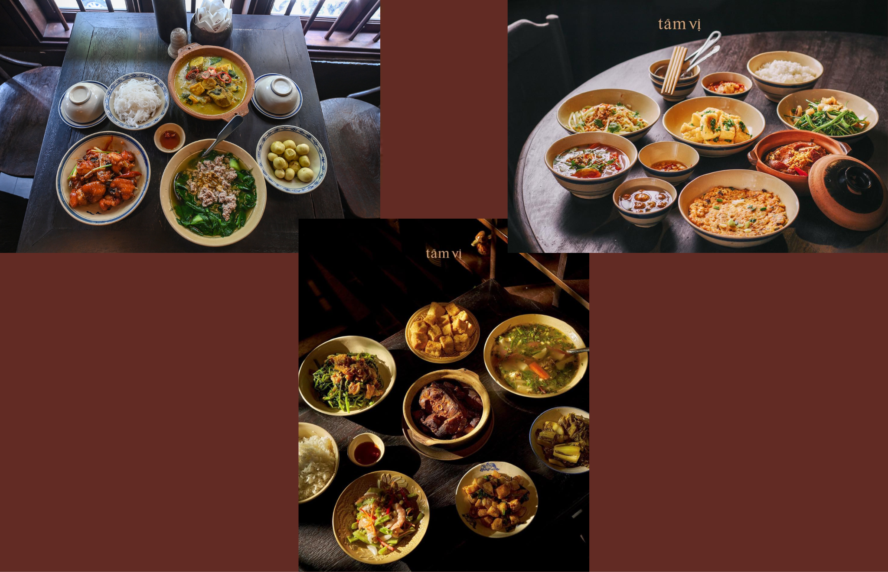
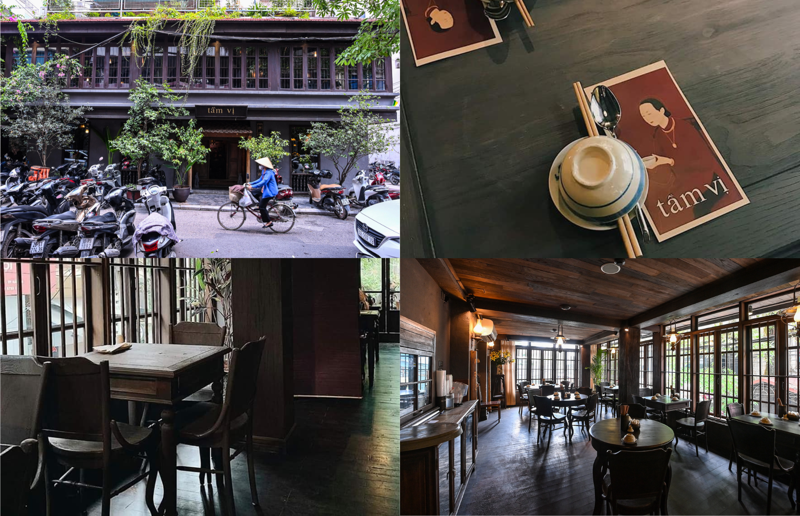

Tầm Vị - từ mâm cơm gia đình đến nhà hàng sao Michelin. Khởi đầu là một nhà hàng nhỏ trên phố Yên Thế, dần dà trở thành một cái tên được đông đảo thực khách lựa chọn khi nhớ những bửa cơm đậm đà phong vị quê nhà.
Đặc biệt nổi bật với món Chả Ốc là món signature được Michelin vinh danh đặc biệt, kết hợp độc đáo giữa giò heo và ốc chuối đậu. Món này được chế biến tinh tế, ăn kèm với thảo mộc tươi, bún tươi và nước mắm chua ngọt có độ cân bằng hoàn hảo. Mỗi miếng chả ốc mang trong mình hương vị đậm đà của biển cả hòa quyện cùng sự béo ngậy của thịt heo, tạo nên một trải nghiệm vị giác khó quên. Ngoài ra còn những món ăn quen thuộc phổ biến trong bửa cơm hằng ngày của người dân Việt Nam là món canh cua nấu mướp mồng tơi hay thịt rang cháy cạnh. Canh được nấu vừa vị, nước dùng thanh không bị tanh mùi cua.Thịt được ướp đậm đà mang hương vị mặn ngọt vừa phải. Mức giá dao động tại nhà hàng từ 200.000 - 400.000 VNĐ/ người, không thuộc phân khúc bình dân nhưng mới những gì nhà hàng mang lại thì hoàn toàn xứng đáng với chất lượng món ăn được mang lại.

Không gian mang lại cảm giác an nhiên, gần gũi như căn bếp gia đình nhưng vẫn toát lên sự tinh tế và thanh lịch. Mỗi chi tiết từ sàn gỗ, cầu thang đến lọ hoa đều được bài trí tỉ mỉ, tạo nên một “Bắc Bộ xưa thu nhỏ” giữa lòng Hà Nội. Quán có khoảnh sân nhỏ nhiều cây xanh, thích hợp ngồi vào những ngày.

Phục vụ trên tinh thần vô tư và chân thành tạo cảm giác thoải mái cho thực khách.Tuy nhiên bàn ghế chưa được chu đáo trong những dịp đặc biệt và không gian ồn ào do lưu lượng khách đông. Nhưng nhìn chung nhà hàng được đánh giá khá cao và là một địa điểm có thể đi cùng bạn bè, gia đình cũng rất ổn. Nếu bạn quan tâm có thể liên hệ ngay đến số hotline hoặc đến trực tiếp để có cái nhìn khách quan hơn nhé.Chúc bạn ngon miệng!
Thời gian mở cửa : 11:00-14:30, 17:00-21:30
SĐT: 0966 323 131
Địa chỉ: 4b P. Yên Thế, Văn Miếu – Quốc Tử Giám, Ba Đình, Hà Nội
Về đầu trang{kind=link}
{kind=link}